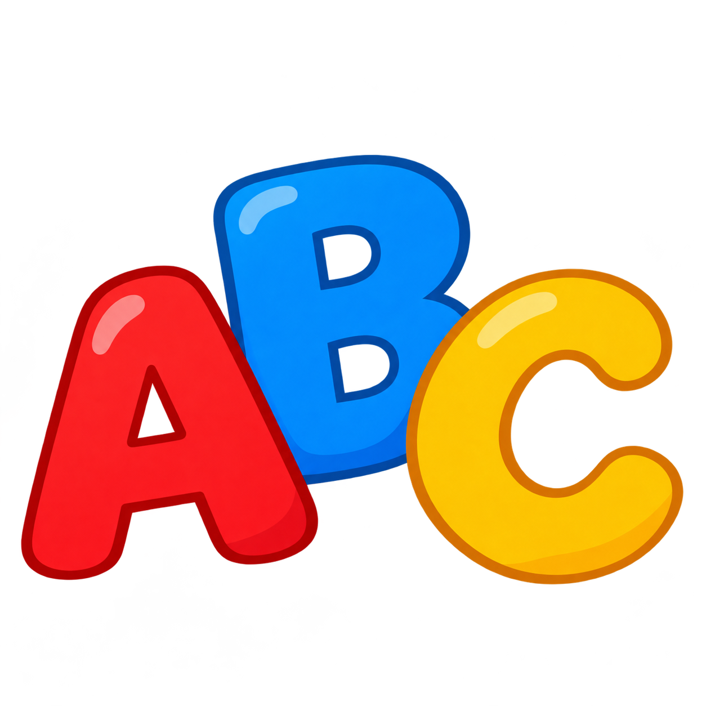
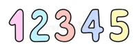
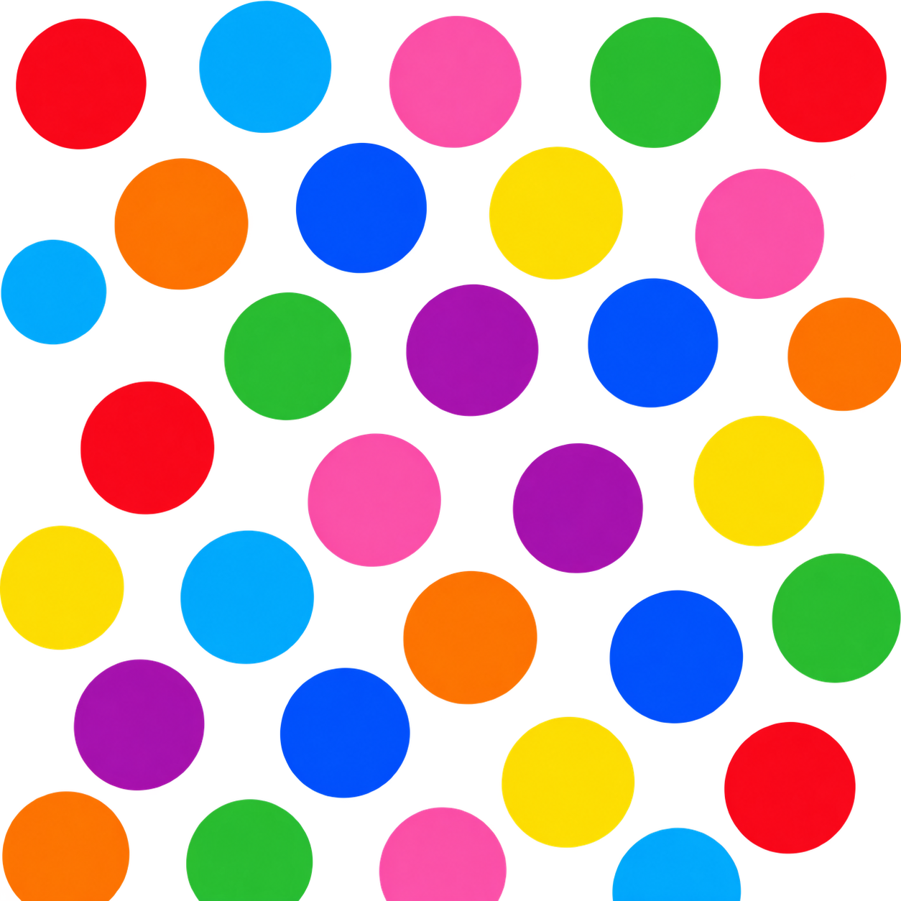

MÓDULO 1
Little Explorers (4 a 5 anos)
O que aprenderemos nesse módulo?
Nesse módulo, o aluno aprenderá sobre as coisas mais básicas do ASL para se comunicar com alguém, vendo sobre animais, cores, comidas, membros da família e números.
Alphabet

1. Introdução e Construção
Nesta fase, o objetivo é que a criança reconheça visualmente as letras do alfabeto e compreenda sua representação por meio dos sinais.
Apresentação Lenta e Clara: Apresente cada letra do alfabeto em ASL, demonstrando o posicionamento correto da mão e permitindo que a criança observe o sinal.
Repetição Guiada: Incentive a criança a reproduzir cada letra, respeitando seu ritmo e auxiliando na formação dos sinais quando necessário.
Associação Visual: Relacione as letras a palavras simples em inglês, como "A is for Apple", utilizando imagens para facilitar a compreensão.
Reforço Visual: Utilize cartões com letras, imagens e sinais correspondentes para fortalecer a associação entre os elementos.
2. Consolidação e prática
Após o reconhecimento inicial, utilize jogos de identificação de letras, associação entre imagens e sinais e atividades de memória. Incentive a criança a reproduzir os sinais apresentados, reforçando o aprendizado de maneira gradual e divertida.
A B C D E F G H I J K L M N O P Q R S T U V W X Y Z
Numbers

1. Introdução e Construção
O objetivo é apresentar os números de 1 a 10 em inglês e ASL, desenvolvendo o reconhecimento numérico e a associação entre quantidade e sinal.
Apresentação Gradual: Introduza os números em pequenas sequências, demonstrando seus sinais de maneira clara.
Repetição Guiada: Peça à criança que acompanhe os movimentos e reproduza os sinais apresentados.
Associação com QuantidadesUtilize objetos e ilustrações para relacionar os números às quantidades correspondentes.
Reforço Visual: Apresente cartões com números, suas representações em inglês e os sinais em ASL.
2. Consolidação e Prática
Realize atividades de contagem, jogos de correspondência entre números e quantidades e exercícios de identificação dos sinais. Utilize desafios simples, como apresentar três objetos e pedir que a criança escolha o número correspondente.
1 2 3 4 5 6 7 8 9
Greetings

1. Introdução e Construção
Nesta etapa, o objetivo é familiarizar a criança com cumprimentos básicos em inglês e seus sinais em ASL, incentivando as primeiras interações comunicativas.
Apresentação contextualizada: Introduza expressões como "Hello", "Goodbye" e "Good morning", demonstrando os sinais correspondentes.
Repetição Guiada: Incentive a criança a observar e reproduzir os sinais, associando cada um à situação apresentada.
Associação com Situações Utilize imagens de pessoas chegando, se despedindo ou iniciando o dia.
Reforço Visual: Apresente cartões ilustrados que relacionem cada cumprimento à sua utilização cotidiana.
2. Consolidação e Prática
Desenvolva atividades de identificação de cumprimentos e pequenas simulações de situações cotidianas. A criança poderá escolher o cumprimento adequado para cada imagem e reproduzir o sinal correspondente.
Hey
Bye
My name is
What's your name?
Animals

Nesta fase, o objetivo é que a criança reconheça visualmente as letras do alfabeto e compreenda sua representação por meio dos sinais.
Apresentação Lenta e Clara:Apresente cada letra do alfabeto em ASL, demonstrando o posicionamento correto da mão e permitindo que a criança observe o sinal.
Colors

Aqui fica o conteúdo que será exibido.
Foods

Aqui fica o conteúdo que será exibido.
Family Members

Aqui fica o conteúdo que será exibido.